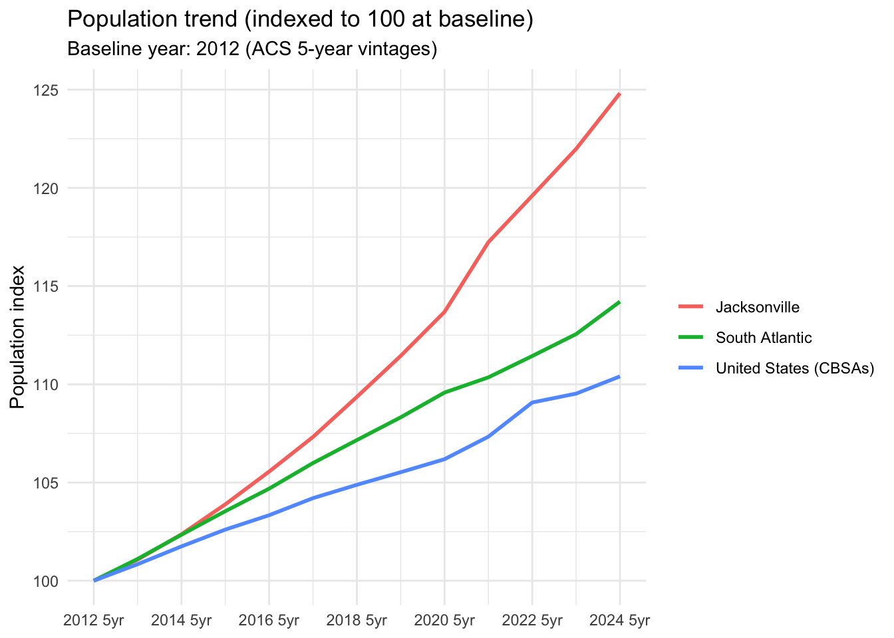
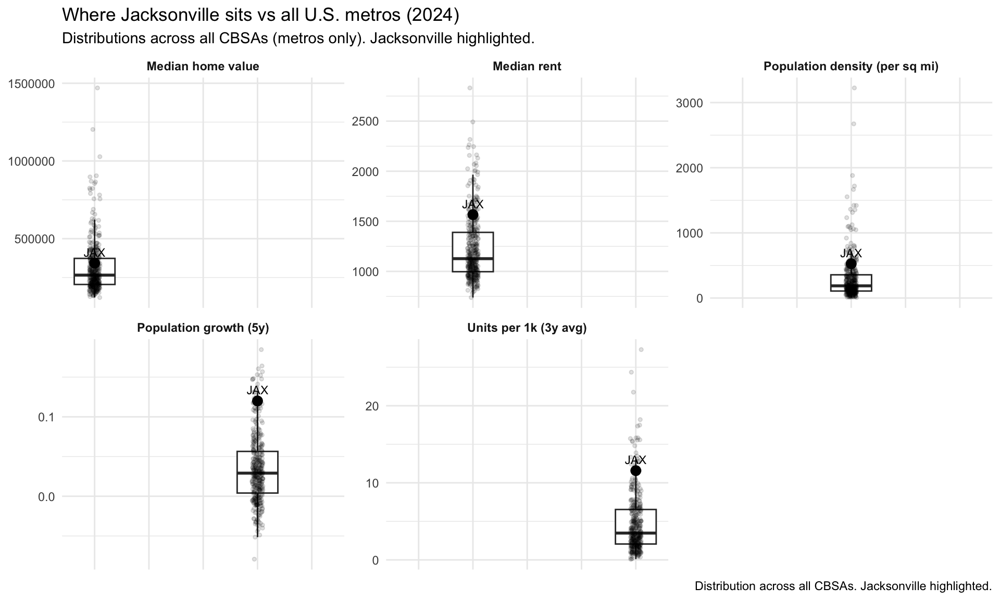

Population (2024)
1,683,960
Pop growth (5y)
12.0%
2019→2024 (ACS 5-year)
Units per 1k (3y avg)
11.6
BPS rolling avg
Median rent
$1,566
Median home value
$342,672
Mean commute
21.4 min
This notebook screens for retail corridor opportunity inside a target metro by moving from where demand is forming to which assets to underwrite. We follow a simple funnel:
The output is designed to be repeatable across metros: a tract ranking table, a zone map with summaries, and a parcel shortlist that can be used for deeper due diligence.
We focus on a small set of metrics that consistently show up in retail corridor formation. At the tract level, we measure:
Demand growth: 5-year population growth (ACS 2019 5-year → 2024 5-year) to identify where the customer base is expanding.
Ability to add buildings:
Density/headroom (lower density suggests more room for future development)
Housing supply tailwind using BPS estimated units per 1,000 residents (3-year rolling average, applied at the county level in V1)
Not already priced-in: a housing cost pressure proxy that blends median rent + median home value using within-metro percentiles, with a screen to exclude the most expensive tracts (top 30%).
Supporting context: Commute intensity (mean commute minutes × (1 − % work-from-home)) to capture daily movement patterns without letting it dominate the model.
These inputs feed two steps in the workflow: (1) eligibility gates that narrow the tract universe to places that match the thesis, and (2) a simple weighted score that ranks the remaining tracts so we can focus zone creation and parcel screening on the most promising corridors.
Here we load in all of our required data for making the analysis possible:
Tract Features - A table with all tracts in the target CBSA and all key KPIs including Population Growth, Density, Home Value, Rent, Commute, etc.
CBSA Geom
County Geom
Tract Geom
Parcel Data
Ingest Tract data and join to our tract feature data frame
| Peer context: ranks and raw values (2024) | ||||||||||
|---|---|---|---|---|---|---|---|---|---|---|
| Pop growth (5y) | Growth rank | Units/1k (3y) | Units rank | Median rent | Rent rank | Median home value | Home value rank | Mean commute | Commute rank | |
| Jacksonville, FL | 12.0% | 5 | 11.6 | 16 | $1,566 | 15 | $342,672 | 27 | 21.37 min | 34 |
| Raleigh-Cary, NC | 11.6% | 8 | 13.9 | 10 | $1,525 | 17 | $429,274 | 7 | 19.75 min | 12 |
| Savannah, GA | 8.4% | 19 | 8.5 | 31 | $1,439 | 23 | $302,891 | 35 | 22.96 min | 57 |
| Wilmington, NC | 7.9% | 23 | 21.8 | 3 | $1,351 | 31 | $361,531 | 19 | 19.49 min | 10 |
| Greenville-Anderson-Greer, SC | 7.4% | 27 | 8.6 | 30 | $1,133 | 50 | $265,189 | 44 | 21.72 min | 41 |
| Benchmark comparison: Jacksonville vs region vs US (2024) | ||||||
|---|---|---|---|---|---|---|
Demand
|
Supply
|
Housing costs
|
Mobility
|
|||
| population | pop_growth_5yr | units_per_1k_3yr | median_gross_rent | median_home_value | mean_travel_time | |
| Jacksonville, FL | 1,683,960 | 12.0% | 11.6 | $1,566 | $342,672 | 21.3734608878661 min |
| South Atlantic | 422,904 | 5.6% | 7.2 | $1,512 | $362,609 | 22.953949471894 min |
| United States (CBSAs) | 342,719 | 3.6% | 4.8 | $1,475 | $415,120 | 22.445032351443 min |

